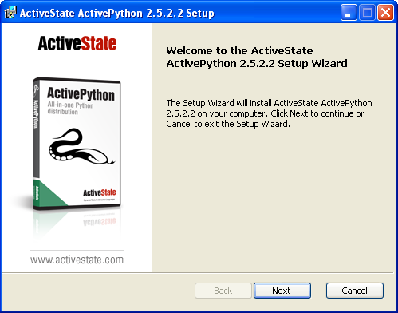
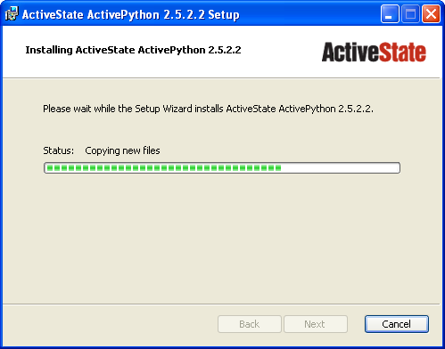
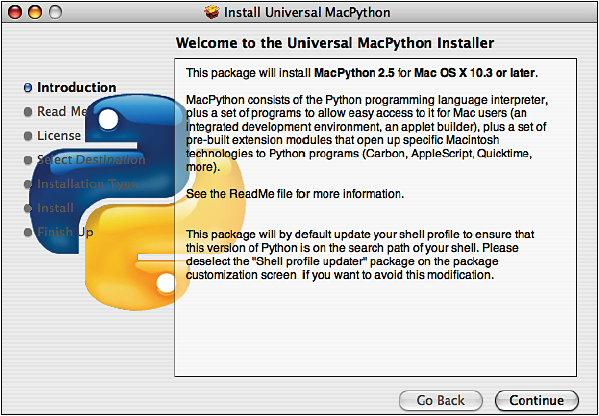
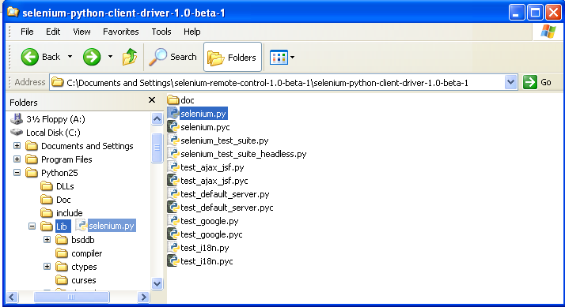

Selenium-RC¶
Selenium-RC¶
When to Use Selenium-RC?¶
Selenium-RC is the response for tests that need a little more that just simple browser actions and a linear excecution. Selenium-RC allows the users to use the full power of programming languages, allowing the users to create tests that can read and write external files, make queries to a Data Base, send emails with the tests report, practically anything that a user can do with a common application.
You can see some examples of this in the Sample Test Scripts section, where we will explain how to develop complex tests and leverage the power of a real programming language in them.
Basically, you will need to use Selenium-RC whenever your test requires logic not supported by running a script from Selenium-IDE. What sort of logic could this be? For example, Selenium-IDE does not directly support:
- condition statements
- iteration
- logging and reporting of test results
- error handling, particularly of unexpected errors
- database testing
- test case grouping
- rerun the failed tests
- test case dependency
- capture screen shots on test failures
Though few of these are not supported by selenium inherently but can be achieved by using language specific libraries. These would be explained in details in the Sample Test Scripts section.
It may be possible to add this functionality by adding a custom built user extension to Selenium-IDE but most prefer to use Selenium-RC to gain the full flexibility of a programming language.
Architecture Diagram¶
Selenium-RC comes in two parts:
- A server which automatically launches and kills browsers, and acts as a HTTP proxy for web requests from them.
- Client libraries for your favorite programming language.
The RC server bundles Selenium Core, and automatically injects it into the browser withing the Application Under Test.
Here is a simplified architectural representation....

How Selenium Remote Control works¶
The Selenium Server communicates directly with the browser using AJAX (XmlHttpRequest). You can send commands directly to the Server using simple HTTP GET/POST requests; that means that you can use any programming language that can make HTTP requests to automate Selenium tests on the browser. To further ease this process, we provide wrapper objects for a number of mainstream programming languages (.NET, Erlang, Java, Javascript, Perl, PHP, Python and Ruby).
Finally, the Selenium Server acts as a client-configured HTTP proxy, to stand in between the browser and your website. This allows a Selenium-enabled browser to run JavaScript on arbitrary websites.
Here is an architectural diagram.
As a test suite starts in your favorite language, the following happens:
- The client/driver establishes a connection with the selenium-server.
- Selenium-Server launches a browser (or reuses an old one) with a URL that will load Selenium core web page.
- Selenium-Core gets the first instruction from the client/driver (via the HTTP Proxy built into the Selenium-RC Server).
- Selenim-Core acts on that first instruction, typically opening a page of the AUT.
- The web server is asked for that page, and it renders in the frame/window reserved for it.
Installation¶
Once you dowload the whole Selenium-RC zip file from the downloads page you will notice that it has lots of subfolders inside. As you already know from the Architecture Diagram, this folders have all the subparts that integrates the RC.
Once you’ve chosen a language to work with, you’ll only need to install the server and the client driver you need.
Selenium server installation¶
The Selenium-RC server is just a jar file, which doesn’t need installation at all. Just be downloading the zip file and extracting the server in the desired directory should be enough. You just go to that directory and execute it using java:
java -jar selenium-server.jar
Most people like to have a more simplified setup, which can be made by creating an executable batch file (.bat on windows and .sh on linux) with just the line write above. This way, you can make a shortcut to that executable file in your desktop and just double-click on it anytime you want to wake up the server.
Java client installation¶
In General configuration of Selenium-RC with any java IDE would have following steps:
- Download Selenium-RC from the SeleniumHQ downloads page
- Start any java IDE
- Create new project
- Add to your project classpath selenium-java-client-driver.jar
- Record your test to from Selenium-IDE and translate it to java code (Selenium IDE has automation translation feature)
- Run selenium server from console (You need initialized java environment variable to do this) like:
$ java -jar selenium-server -proxyInjectionMode.
Note
Server can be started from java as well.
- Run your test in the IDE
These points have been delineated below with reference to Eclipse and IntelliJ:
Configuring Selenium-RC With Eclipse¶
Eclipse is a multi-language software development platform comprising an IDE and a plug-in system to extend it. It is written primarily in Java and is used to develop applications in this language and, by means of the various plug-ins, in other languages as well as C/C++, Cobol, Python, Perl, PHP and more.
This document describes configuration of Selenium-RC with Eclipse - Version: 3.3.0. (Europa Release). It should not be too different for higher versions of Eclipse
- Launch Eclipse.
- Select File > New > Other.
- Java > Java Project > Next
- Provide Name to your project, Select JDK in ‘Use a project Specific JRE’ option (JDK 1.5 selected in this example) > click Next
- Keep ‘JAVA Settings’ intact in next window. Project specific libraries can be added here. (This described in detail in later part of document.)
- Click Finish > Click on Yes in Open Associated Perspective pop up window.
This would create Project Google in Package Explorer/Navigator pane.
- Right click on src folder and click on New > Folder
Name this folder as com and click on Finish button.
- This should get com package insider src folder.
- Following the same steps create core folder inside com
SelTestCase class can be kept inside core package.
Create one more package inside src folder named testscripts. This is a place holder for test scripts.
Please notice this is about the organization of project and it entirely depends on individual’s choice / organization’s standards. Test scripts package can further be segregated depending upon the project requirements.
- Create a folder called lib inside project Google. Right click on Project name > New > Folder. This is a place holder for jar files to project (i.e. Selenium client driver, selenium server etc)
This would create lib folder in Project directory.
- Right click on lib folder > Build Path > Configure build Path
- Under Library tab click on Add External Jars to navigate to directory where jar files are saved. Select the jar files which are to be added and click on Open button.
After having added jar files click on OK button.
Added libraries would appear in Package Explorer as following:
Configuring Selenium-RC With Intellij¶
IntelliJ IDEA is a commercial Java IDE by the company JetBrains. Intellij provides a set of integrated refactoring tools that allow programmers to quickly redesign their code. IntelliJ IDEA provides close integration with popular open source development tools such as CVS, Subversion, Apache Ant and JUnit.
Python Client Installation¶
The following steps describe the basic installation procedure. After following this, the user can start using the desired IDE, (even write tests in a text processor and run them from command line!) without any extra work (at least from the selenium’s part).
Installing Python
Note
This will cover python installation on Windows and Mac only, as in most linux distributions python is already pre-installed by default.
Windows
- Download Active python’s installer from ActiveState’s official site: http://activestate.com/Products/activepython/index.mhtml
- Run the installer downloaded (ActivePython-x.x.x.x-win32-x86.msi)
Mac
The latest Mac OS X version (Leopard at this time) comes with Python pre-installed. To install an extra Python, get a universal binary at http://www.pythonmac.org/ (packages for Python 2.5.x). You will get a .dmg file that you can mount. It contains a .pkg file that you can launch.

Installing the Selenium driver client for python
Download the last version of Selenium Remote Control from the downloads page
Extract the content of the downloaded zip file
Copy the module with the Selenium’s driver for Python (selenium.py) in the folder C:/Python25/Lib (this will allow you to import it directly in any script you write).
You will find the module in the extracted folder, it’s located inside selenium-python-driver-client.

Congratulations, you’re done! Now any python script that you create can import selenium and start interacting with the browsers.
Sample Test Scripts¶
If we use the following test recorded with Selenium-IDE as a base:
| open | / | |
| type | q | selenium rc |
| clickAndWait | submit | |
| assertTextPresent | Selenium-RC |
Note
The table doesn’t include that the script is written to test a search at http://www.google.com
Here is the test script exported to all the programming languages:
using System;
using System.Text;
using System.Text.RegularExpressions;
using System.Threading;
using NUnit.Framework;
using Selenium;
namespace SeleniumTests
{
[TestFixture]
public class NewTest
{
private ISelenium selenium;
private StringBuilder verificationErrors;
[SetUp]
public void SetupTest()
{
selenium = new DefaultSelenium("localhost", 4444, "*firefox", "http://www.google.com/");
selenium.Start();
verificationErrors = new StringBuilder();
}
[TearDown]
public void TeardownTest()
{
try
{
selenium.Stop();
}
catch (Exception)
{
// Ignore errors if unable to close the browser
}
Assert.AreEqual("", verificationErrors.ToString());
}
[Test]
public void TheNewTest()
{
selenium.Open("/");
selenium.Type("q", "selenium rc");
selenium.Click("submit");
selenium.WaitForPageToLoad("30000");
Assert.IsTrue(selenium.IsTextPresent("Selenium-RC"));
}
}
}
package com.example.tests;
import com.thoughtworks.selenium.*;
import java.util.regex.Pattern;
public class NewTest extends SeleneseTestCase {
public void setUp() throws Exception {
setUp("http://www.google.com/", "*firefox");
}
public void testNew() throws Exception {
selenium.open("/");
selenium.type("q", "selenium rc");
selenium.click("submit");
selenium.waitForPageToLoad("30000");
assertTrue(selenium.isTextPresent("Selenium-RC"));
}
}
use strict;
use warnings;
use Time::HiRes qw(sleep);
use Test::WWW::Selenium;
use Test::More "no_plan";
use Test::Exception;
my $sel = Test::WWW::Selenium->new( host => "localhost",
port => 4444,
browser => "*firefox",
browser_url => "http://www.google.com/" );
$sel->open_ok("/");
$sel->type_ok("q", "selenium rc");
$sel->click_ok("submit");
$sel->wait_for_page_to_load_ok("30000");
$sel->is_text_present_ok("Selenium-RC");
<?php
require_once 'PHPUnit/Extensions/SeleniumTestCase.php';
class Example extends PHPUnit_Extensions_SeleniumTestCase
{
function setUp()
{
$this->setBrowser("*firefox");
$this->setBrowserUrl("http://www.google.com/");
}
function testMyTestCase()
{
$this->open("/");
$this->type("q", "selenium rc");
$this->click("submit");
$this->waitForPageToLoad("30000");
$this->assertTrue($this->isTextPresent("Selenium-RC"));
}
}
?>
from selenium import selenium
import unittest, time, re
class NewTest(unittest.TestCase):
def setUp(self):
self.verificationErrors = []
self.selenium = selenium("localhost", 4444, "*firefox",
"http://www.google.com/")
self.selenium.start()
def test_new(self):
sel = self.selenium
sel.open("/")
sel.type("q", "selenium rc")
sel.click("submit")
sel.wait_for_page_to_load("30000")
self.failUnless(sel.is_text_present("Selenium-RC"))
def tearDown(self):
self.selenium.stop()
self.assertEqual([], self.verificationErrors)
require "selenium"
require "test/unit"
class NewTest < Test::Unit::TestCase
def setup
@verification_errors = []
if $selenium
@selenium = $selenium
else
@selenium = Selenium::SeleniumDriver.new("localhost", 4444, "*firefox", "http://www.google.com/", 10000);
@selenium.start
end
@selenium.set_context("test_new")
end
def teardown
@selenium.stop unless $selenium
assert_equal [], @verification_errors
end
def test_new
@selenium.open "/"
@selenium.type "q", "selenium rc"
@selenium.click "submit"
@selenium.wait_for_page_to_load "30000"
assert @selenium.is_text_present("Selenium-RC")
end
end
Now we will analyze the different parts of the tests for you to understand each statement.
Basic Tests Structure¶
Here you will find an explanation of the basic test structure on each programming language. This tends to differ from one to another, so you’ll find separate explanations for each of them:
C#¶
Java¶
For java, we use a wrapper of the basic Junit test case. With it, you’ll save many lines of code by just writing the basic part and letting the wrapper do all the rest.
package com.example.tests;
// We specify the package of our tess
import com.thoughtworks.selenium.*;
// This is the driver's import, you'll use this for instantiating a
// browser and make it do what you need.
import java.util.regex.Pattern;
// Selenium-IDE add the Pattern module because it's sometimes used for
// regex validations. You can remove the module if it's not used in your
//script.
public class NewTest extends SeleneseTestCase {
// We create our selenium test case
public void setUp() throws Exception {
setUp("http://www.google.com/", "*firefox");
// We instantiate and start the browser
}
public void testNew() throws Exception {
selenium.open("/");
selenium.type("q", "selenium rc");
selenium.click("submit");
selenium.waitForPageToLoad("30000");
assertTrue(selenium.isTextPresent("Selenium-RC"));
// These are the real test steps
}
}
Perl¶
PHP¶
Python¶
We use pyunit testing framework (the unittest module) for our tests, you should understand how this works to better understand how to write your tests. To completely understand pyunit, you should read it’s official documentation.
The basic test structure is:
from selenium import selenium
# This is the driver's import, you'll use this class for instantiating a
# browser and make it do what you need.
import unittest, time, re
# This are the basic imports added by Selenium-IDE by default.
# You can remove the modules if they are not used in your script.
class NewTest(unittest.TestCase):
# We create our unittest test case
def setUp(self):
self.verificationErrors = []
# This is an empty array where we will store any verification errors
# we find in our tests
self.selenium = selenium("localhost", 4444, "*firefox",
"http://www.google.com/")
self.selenium.start()
# We instantiate and start the browser
def test_new(self):
# This is the test code, here you should put the actions you need
# the browser to do during your test
sel = self.selenium
# We assign the browser to the variable "sel" (just to save us from
# typing "self.selenium" each time we want to call the browser).
sel.open("/")
sel.type("q", "selenium rc")
sel.click("submit")
sel.wait_for_page_to_load("30000")
self.failUnless(sel.is_text_present("Selenium-RC"))
# These are the real test steps
def tearDown(self):
self.selenium.stop()
# we close the browser (I'd recommend you to comment this line while
# you are creating and debugging your tests)
self.assertEqual([], self.verificationErrors)
# And make the test fail if we found that any verification errors
# where found
Ruby¶
Starting The Browser¶
selenium = new DefaultSelenium("localhost", 4444, "*firefox", "http://www.google.com/");
selenium.Start();
setUp("http://www.google.com/", "*firefox");
my $sel = Test::WWW::Selenium->new( host => "localhost",
port => 4444,
browser => "*firefox",
browser_url => "http://www.google.com/" );
$this->setBrowser("*firefox");
$this->setBrowserUrl("http://www.google.com/");
self.selenium = selenium("localhost", 4444, "*firefox",
"http://www.google.com/")
self.selenium.start()
if $selenium
@selenium = $selenium
else
@selenium = Selenium::SeleniumDriver.new("localhost", 4444, "*firefox", "http://www.google.com/", 10000);
@selenium.start
Each of this sentences is in charge of instantiating a browser (which is just an object for your code) and assigning the “browser” instance to a variable (which will later be used to call methods from the browser, like open or type)
The initial parameters that you should give when you create the browser instance are:
- host
- This is the ip location where the server is located. Most of the times is the same machine than the one where the client is running, so you’ll see that it’s an optional parameter on some clients.
- port
- As the host, it determines on which socket is the server listening waiting for the client to communicate with him. Again, it can be optional in some client drivers.
- browser
- The browser in which you want to run the tests. This is a required parameter (I hope you understand why :))
- url
- The base url of the application under test. This is also required on all the client libs and Selenium-RC needs it before starting the browser due to the way the same server is implemented.
Finally, some languages require the browser to be started explicitly by calling it’s start method.
Running Commands¶
Once you have the browser initialized and assigned to a variable (generally named selenium) you can make it run commands by calling the respective methods from the selenium browser. For example, when you call the type method of the selenium object:
selenium.type("field-id","sting to type")
In backend (by the magic of Selenium-RC), the browser will actually type using the locator and the string you specified during the method call. So, summarizing, what for your code is just a regular object (with methods and properties), in backend it’s making the real browser do things.
Retrieving and Reporting Results¶
Adding Some Spice to Your Tests¶
Now you’ll understand why you needed Selenium-RC and you just couldn’t stay only with the IDE. We will try to give you some guidance on things that can only be done using a programming language. The different examples are just written on only one of the languages, but we think that you’ll understand the idea and will be able to translate it to the language of your choice.
Iteration¶
Iteration is one of the most common things people needs to do in their tests. Generally, to repeat a simple search, or saving you from duplicating the same code several times.
If we take the search example we’ve been looking at, it’s not so crazy to think that we want to check that all the Selenium tools appear on the search we make. This kind of test could be made doing the following using Selenese:
| open | / | |
| type | q | selenium rc |
| clickAndWait | submit | |
| assertTextPresent | Selenium-RC | |
| type | q | selenium ide |
| clickAndWait | submit | |
| assertTextPresent | Selenium-IDE | |
| type | q | selenium grid |
| clickAndWait | submit | |
| assertTextPresent | Selenium-Grid |
As you can see, the code has been triplicated to run the same steps 3 times. This doesn’t look to efficient.
By using a programming language, we can just iterate over a list and do the search in the following way (the example has been written in python):
list = ("IDE", "RC", "GRID")
for tool in list:
sel.open("/")
sel.type("q", "selenium " + tool)
sel.click("submit")
sel.wait_for_page_to_load("30000")
self.failUnless(sel.is_text_present("Selenium-" + tool))
Data Driven Testing¶
So, the iteration idea seems cool. Let’s improve this by allowing the users to write an external text file from which the script should read the input data, search and assert it’s existence.
As you can see, this task looks really simple being made using a scripting language while it’s impossible to do using Selenium-IDE.
Error Handling¶
Conditionals¶
Well, the iteration and data input seem nice, but we’ve just started. How about alternative paths? What if we want our script to change to the next page if it finds that the search term was not present in the first one?
That doesn’t seem too complicated:
By just using a simple if condition, we can do interesting things. Think of the possibilities!
Data Base Validations¶
Off course, you can also do Data Base queries in your favorite scripting language. Why not using them for some data validations on the application under test?
If we had access to Google’s databases, I guess this part would be easier to explain. But for now you’ll have to conform with just the idea...
Server Command Line options¶
Usage:
$ java -jar selenium-server.jar [-interactive] [options]
Options:
| -port | <nnnn> The port number the selenium server should use (default 4444) |
| -timeout | <nnnn> An integer number of seconds before we should give up |
| -interactive | Puts you into interactive mode. See the tutorial for more details. |
| -singleWindow | Puts you into a mode where the test web site executes in a frame. This mode should only be selected if the application under test does not use frames. |
| -profilesLocation | |
| Specifies the directory that holds the profiles that java clients can use to start up selenium. Currently supported for Firefox only. | |
| -forcedBrowserMode | |||||||||||||
| <browser> Sets the browser mode (e.g. “*iexplore” for all sessions, no matter what is passed to getNewBrowserSession | |||||||||||||
| -forcedBrowserModeRestOfLine | |||||||||||||
| <browser> Sets the browser mode to all the remaining tokens on the line (e.g. “*custom /some/random/place/iexplore.exe”) for all sessions, no matter what is passed to getNewBrowserSession | |||||||||||||
| -userExtensions | |||||||||||||
| <file> Indicates a JavaScript file that will be loaded into selenium | |||||||||||||
| -browserSessionReuse | |||||||||||||
| Stops re-initialization and spawning of the browser between tests | |||||||||||||
| -avoidProxy | By default, we proxy every browser request; set this flag to make the browser use our proxy only for URLs containing ‘/selenium-server’ | ||||||||||||
| -firefoxProfileTemplate | |||||||||||||
| <dir> Normally, we generate a fresh empty Firefox profile every time we launch. You can specify a directory to make us copy your profile directory instead. | |||||||||||||
| -debug | Puts you into debug mode, with more trace information and diagnostics | ||||||||||||
| -browserSideLog | |||||||||||||
| Enables logging on the browser side; logging messages will be transmitted to the server. This can affect performance. | |||||||||||||
| -ensureCleanSession | |||||||||||||
| If the browser does not have user profiles, make sure every new session has no artifacts from previous sessions. For example, enabling this option will cause all user cookies to be archived before launching IE, and restored after IE is closed. | |||||||||||||
| -trustAllSSLCertificates | |||||||||||||
| Forces the Selenium proxy to trust all SSL certificates. This doesn’t work in browsers that don’t use the Selenium proxy. | |||||||||||||
| -log | <LogFileName> Writes lots of debug information out to a log file | ||||||||||||
| -htmlSuite | <browser> <startURL> <suiteFile> <resultFile> Run a single HTML Selenese (Selenium Core) suite and then exit immediately, using the specified browser (e.g. “*firefox”) on the specified URL (e.g. “http://www.google.com“). You need to specify the absolute path to the HTML test suite as well as the path to the HTML results file we’ll generate. | ||||||||||||
| -proxyInjectionMode | |||||||||||||
Puts you into proxy injection mode, a mode where the selenium server acts as a proxy server for all content going to the test application. Under this mode, multiple domains can be visited, and the following additional flags are supported:
| |||||||||||||
We also support two Java system properties: -Dhttp.proxyHost and -Dhttp.proxyPort. Selenium-RC normally overrides your proxy server configuration, using the Selenium Server as a proxy. Use these options if you need to use your own proxy together with the Selenium Server proxy. Use the proxy settings like like this:
$ java -Dhttp.proxyHost=myproxy.com -Dhttp.proxyPort=1234 -jar selenium-server.jar
If your HTTP proxy requires authentication, you will also need to set -Dhttp.proxyUser and -Dhttp.proxyPassword, in addition to http.proxyHost and http.proxyPort:
$ java -Dhttp.proxyHost=myproxy.com -Dhttp.proxyPort=1234 -Dhttp.proxyUser=joe -Dhttp.proxyPassword=example -jar selenium-server.jar
Howto correctly use your Verify commands in Selenium-RC¶
Paul’s part¶
Selenium-IDE Generated Code¶
The Selenium-RC Program’s Main()¶
Handling HTTPS and Security Popups¶
Many applications will switch from using HTTP to HTTPS when they need to send encrypted information such as passwords or credit card information. This is common with many of today’s web applications. Selenium-RC supports this.
To ensure the HTTPS site is genuine, the browser will need a security certificate. Otherwise, when the Selenium code is inserted between the browser and the application under test, the browser will recognize this as a security violation. It will assume some other site is masquerading as your application. When this occurs the browser displays security popups, and these popups cannot be closed using Selenium-RC.
When dealing with HTTPS you must use a run mode that supports this and handles the security certificate for you. You specify the run mode when you test program initialized Selenium.
In Selenium-RC 1.0 beta 2 and later use *firefox or *iexplore for the run mode. In earlier versions, including Selenium-RC 1.0 beta 1, use *chrome or *iehta, for the run mode. Using these run modes, you will not need to install any special security certificates to prevent your browser’s security warning popups.
In Selenium 1.0 beta 2 and later, the run modes *firefox or *iexplore are recommended. There are additional run modes of *iexploreproxy and *firefoxproxy. These are provided only for backwards compatibility and should not be used unless required by legacy test programs. Their use will present limitations with security certificate handling and with the running of multiple windows if your application opens additional browser windows.
In earlier versions of Selenium-RC, *chrome or *iehta were the run modes that supported HTTPS and the handling of security popups. These were ‘experimental modes in those versions but as of Selenium-RC 1.0 beta 2, these modes have now become stable, and the *firefox and *iexplore run modes now translate into the *chrome and *iehta modes.
Security Certificates Explained¶
Normally, your browser will trust the application you are testing, most likely by installing a security certificate which you already own. You can check this in your browser’s options or internet properties (if you don’t know your AUT’s security certificate as you system administrator or lead developer). When Selenium loads your browser it injects code to intercept messages between the browser and the server. The browser now thinks something is trying to look like your application, but really is not a significant security risk. So, it responds by alerting you with popup messages.
Please, can someone verify that I explained certificates correctly?—this is an area I’m not certain I understand well yet.
To get around this, Selenium-RC, (again when using a run mode that support this) will install its own security certificate, temporarily, onto your client machine in a place where the browser can access it. This tricks the browser into thinking it’s accessing a different site from your application under test and effectively suppresses the security popups.
Another method that has been used with earlier versions of Selenium is to install the Cybervillians security certificate provided with you selenium installation. Most users should no longer need to do this, however, if you are running Selenium-RC in proxy injection mode, you may need to explicitly install this security certificate to avoid the security popups.
Multi-Window Mode¶
Before 1.0, Selenium by default ran the application under test in a subframe which looks like this:
Unfortunately, some apps don’t run properly in a subframe, preferring to be loaded into the top frame of the window. That’s why we made the multiWindow mode (the new default since Selenium 1.0). Using this you can make your application under test run in a separate window rather than in the default frame.
Older versions of Selenium however did not handle this unless you explicitly told the server to run in multiwindow mode. For handling multiple windows, Selenium 0.9.2 required the Server to be started with the following option:
-multiwindow
In Selenium-RC 1.0 and later if you want to require your testing to run in a single frame you can explicitly state this to the Selenium Server using the option:
-singlewindow
Using the Browser While Selenium is Running¶
You may want to use your browser at the same time that Selenium is also using it. Perhaps you want to run some manual tests while Selenium is running your automated tests and you wish to do this on the same machine. Or perhaps you just want to use your Facebook account but Selenium is running in the background. This isn’t a problem.
With Internet Explorer, you can simply start another browser instance and run it in parallel to the IE instance used by Selenium-RC. With Firefox, you can do this also, but you must specify a separate profile.
Specifying a Separate Firefox Profile¶
Firefox will not run two instances simultaneously unless you specify a separate profile for each instance. Later versions of Selenium-RC run in a separate profile automatically, however, if you are using an older version of Selenium, you may need to explicitly specify a separate profile.
Open the Windows “Start” menu, select “Run”,then type and enter one of the following:
firefox.exe -profilemanager
firefox.exe -P
Create a new profile using the dialog. When you run the Selenium-RC server, tell it to use this new Firefox profile with the server command-line option -firefoxProfileTemplate and specify the path to the profile:
-firefoxProfileTemplate "path to the profile"
Note
On windows, people tend to have problems with the profiles location. Try to start using a simple location like C:\seleniumProfile to make it work and then move the profile where you want and try to find it again.
Warning
Be sure to put your profile in a separate new folder!!! The Firefox profile manager tool will delete all files in a folder if you delete a profile, regardless of whether they are profile files or not.
Specifying the Path to a Specific Browser¶
You can specify to Selenium-RC a path to a specific browser. This is useful if you have different versions of the same browser, and you wish to use a specific one. Also, this is used to allow your tests to run against a browser not directly supported by Selenium-RC. When specifying the run mode, use the *custom specifier followed by the full path to the browser’s executable:
*custom <path to browser>
For example
Reports Generation¶
Troubleshooting¶
Firefox and Linux¶
On Unix/Linux, versions of Selenium before 1.0 needed to invoke “firefox-bin” directly, so if you are using a previous version, make sure that the real executable is on the path.
On most linux distributions, the real firefox-bin is located on:
/usr/lib/firefox-x.x.x/
Where the x.x.x is the version number you currently have. So, to add that path to the user’s path. you will have to add the following to your .bashrc file:
export PATH="$PATH:/usr/lib/firefox-x.x.x/"
If necessary, you can specify the path to firefox-bin directly in your test, like this:
"*firefox /usr/lib/firefox-x.x.x/firefox-bin"
IE and the style attributes¶
Unable to Connect to Server¶
When your test program cannot connect to the Selenium Server, an exception will be thrown in your test program. It should display this message or a similar one:
"Unable to connect to remote server….Inner Exception Message: No
connection could be made because the target machine actively refused it…."
(using .NET and XP Service Pack 2)
If you see a message like this, be sure you started the Selenium Server. If you did, then there is some problem with the connectivity between the two problems. This should not normally happen when your operating system has typical networking and TCP/IP settings. If you continue to have trouble, try a different computer.
(500) Internal Server Error
This error seems to occur when Selenium-RC cannot load the browser.
500 Internal Server Error
(using .NET and XP Service Pack 2)
- Firefox cannot start because the Firefox browser is already open and you did not specify a separate profile.
- The run mode you’re using doesn’t match any browser on your machine is this true? I haven’t tried this one as I didn’t want to uninstall either of my browsers.
- you specified the path to the browser explicitly (see above) but the path is incorrect.
Selenium Starts but Cannot Find the AUT¶
If your test program starts Selenium successfully, but the browser window cannot display the website you’re testing, the most likely cause is your test program is not using the correct URL.
This can easily happen. When Selenium-IDE generates the native language code from your script it inserts a dummy URL. It may not (in the .NET-C# format this problem exists) use the base URL when it generates the code. You will need to explicitly modify the URL in the generated code.
Firefox refused shutdown while preparing a profile¶
This most often occurs when your run your Selenium-RC test program against Firefox, but you already have a Firefox browser session running, and, you didn’t specify a separate profile when you started the Selenium Server. The error from the test program looks like this:
Error: java.lang.RuntimeException: Firefox refused shutdown while
preparing a profile
(using .NET and XP Service Pack 2)
Here’s the complete error msg from the server:
16:20:03.919 INFO - Preparing Firefox profile...
16:20:27.822 WARN - GET /selenium-server/driver/?cmd=getNewBrowserSession&1=*fir
efox&2=http%3a%2f%2fsage-webapp1.qa.idc.com HTTP/1.1
java.lang.RuntimeException: Firefox refused shutdown while preparing a profile
at org.openqa.selenium.server.browserlaunchers.FirefoxCustomProfileLaunc
her.waitForFullProfileToBeCreated(FirefoxCustomProfileLauncher.java:277)
…………………….
Caused by: org.openqa.selenium.server.browserlaunchers.FirefoxCustomProfileLaunc
her$FileLockRemainedException: Lock file still present! C:\DOCUME~1\jsvec\LOCALS
~1\Temp\customProfileDir203138\parent.lock
To resolve this, see the section on Specifying a Separate Firefox Profile
Versioning Problems¶
Make sure your version of Selenium supports the version of your browser. For example, Selenium-RC 0.92 does not support Firefox 3. At times, you may be lucky (I was) in that it may still work. But regardless, don’t forget to check which browser versions are supported by the version of Selenium you are using. When in doubt, use the latest release version of Selenium.
Table Of Contents
- Selenium-RC
- When to Use Selenium-RC?
- Architecture Diagram
- How Selenium Remote Control works
- Installation
- Sample Test Scripts
- Server Command Line options
- Howto correctly use your Verify commands in Selenium-RC
- Paul’s part
- Specifying a Separate Firefox Profile
- Specifying the Path to a Specific Browser
- Reports Generation
- Troubleshooting